Peoch
React Spring Boot Jenkins MySQL
데모용 계정
Email : jj@example.com
PW : 1234
🏆 신한 금융 SW 아카데미 4기 8회차 우수상 수상 🏆
프로젝트 개요
사람의 가능성에 투자하다
Peo + ch = People + 같이/가치
기술 스택
- 프론트앤드: React, JavaScript
- 백엔드: Spring Boot, Java
- 데이터베이스: MySQL
- 배포: Jenkins, Linux 자체 서버
- 버전 관리: Git, GitHub
개발 기간
2025.01 ~ 2025.03
주요 기능

- 사용자 커스텀 카드(혜택, 디자인) 제작
- 사용자 정보를 통한 AI 사용자 소득 예측
- 도출해낸 예상 소득에 기반한 고객 미래 투자
- 사용자 성장 지원
담당 파트
Jenkins를 활용한 CI/CD 자동화 및 인프라 운영, 관리자 및 사용자 대시보드, 메인 페이지 디자인, 기타 UI/UX 설계를 담당하였습니다.
프론트엔드 개발 중 겪은 문제와 느낀 점
프로젝트 초기에 계획 단계에서 디자인 수립 시 전반적인 구조와 컴포넌트의 형태는 어느 정도 논의했지만 그 스타일의 구현 방법에 대한 통일이 전혀 이루어지지 않은 상태로 작업이 시작됐습니다. 저는 React에서 styled-components를 주로 사용했지만, 다른 팀원은 순수 CSS 또는 tailwind 등 서로 다른 스타일링 방식을 쓰다 보니 공통 UI 컴포넌트를 정의할 수 없었고, 클래스명이 중복되거나 어디에서 어떤 스타일이 지정되는지를 추적하는 데 시간이 많이 소요되었습니다.
컴포넌트를 그대로 가져오다 보니 미리 고려하지 않은 예외 상황이 많이 발생하였고 결국 똑같은 클래스를 사용하려 해도, 그 클래스에 대한 이해가 없다 보니 마음대로 수정할 수 없었고 클래스를 복사해서 추가하는 상황이 되었고 결국 과도한 스타일 클래스 생성으로 스타일의 통일성이 저하되었습니다. 결과적으로 화면마다 UI 구성의 결이 조금씩 달랐고, 마치 각 기능별로 다른 사람이 진행한 것처럼 보이는 문제가 발생했습니다.
또한 디자인 시스템도 명확히 정의되지 않아서 태그의 폰트 크기부터 버튼의 radius, 색상, shadow 효과까지 전부 제각각이었습니다. 저는 최대한 통일감을 주기 위해 기존 디자인을 참고해서 상단 헤더나 카드 컴포넌트 등에 재사용 가능한 styled-components를 작성했지만, 이미 다른 페이지에선 다른 방식으로 구현된 상태였기 때문에 완전히 통일하는 데에는 한계가 있었습니다.
이러한 경험을 통해 프론트엔드 개발에서도 디자인 시스템과 공통 컴포넌트, 스타일 가이드라인을 초반에 명확히 정하는 것이 얼마나 중요한지 체감했습니다. 물론 프로젝트 진행 기간에 여유가 없었던 것도 맞지만 개발의 진행에 명확한 단계와 계획이 없었고 이는 단지 예쁘게 보이는 문제가 아니라, 실제 협업과 유지보수의 효율성을 좌우하는 것이라는 것을 이번 프로젝트를 통해 뼈저리게 느꼈습니다.
기능별 개발 과정에서 파트 간 정보 전달의 어려움
다음으로, 기능별 개발 과정에서 파트 간 정보 전달의 어려움이 있었습니다. 백엔드를 기능 단위로 분리하여 개발하다 보니, 각 기능에 필요한 데이터 모델 설계 및 정보 흐름을 정의하는 데 있어 협업의 중요성을 절감했습니다.
- DTO(Data Transfer Object) 설계: 각 기능에서 필요한 데이터 구조를 정의하고 이를 프론트엔드와 공유하는 과정에서 DTO 설계의 일관성과 효율성을 확보하는 것이 중요했습니다.
- ERD(Entity-Relationship Diagram) 설계: 데이터베이스 테이블 간의 관계를 명확히 정의하고, 기능별 요구사항을 반영하는 데 있어 초기 ERD 설계의 중요성과 변경 관리의 어려움을 경험했습니다.
- 정보 흐름 설계: 사용자 요청부터 데이터 처리, 응답까지 이어지는 전반적인 정보의 흐름을 기능별로 명확하게 정의하고 공유하는 데 어려움이 있었습니다.
이러한 문제점을 극복하기 위해 초기 설계 단계에서 팀원들과 밀접하게 소통하며 ERD와 API 명세서를 최대한 상세하게 작성했습니다. 또한, 주기적인 스크럼 회의를 통해 각 파트의 진행 상황을 공유하고, DTO 및 정보 흐름에 대한 변경 사항을 즉시 반영하여 혼선을 줄였습니다. Jenkins를 활용한 지속적인 통합 및 배포 환경을 구축하여 변경 사항을 빠르게 공유하고 검증할 수 있도록 지원했습니다.
인프라 및 배포 단계에서의 도전과 해결
인프라 리소스 관리 및 효율화 경험
인프라 구성 당시 전달받았던 정보는 머신의 IP, 그리고 그 머신의 내부에서 여러 개의 가상 머신을 구성해 각 팀에 할당했다는 것. 내부 IP 그리고 그 가상머신의 계정이었습니다. 자연스럽게 저는 저희 팀의 서비스를 배포하였고 그 이후에 Jenkins를 사용한 CI/CD까지 진행해보려 했습니다. 당시에는 단순히 서비스 구동만을 염두에 두었지 CI/CD 구현에 필요한 리소스는 고려하지 못했습니다. Jenkins의 초기 설정을 마치고 간단한 release branch push 시 자동 build를 설정했으나 프론트엔드의 빌드 작업이 예상보다 훨씬 많은 리소스를 요구하는 작업임을 그리고 할당된 리소스가 그렇게 많지 않다는 것을 간과했습니다.
결국, 초기 할당된 리소스 내에서 빌드 작업이 시작되자 리소스 과다 사용으로 인해 인스턴스 및 전체 서버 자체가 중단되는 상황이 발생했습니다. 아직도 왜 이렇게 됐는지는 아직도 확인하지 못했습니다. 예상해볼 수 있는 이유는 가능성은 낮지만 다른 팀의 리소스 사용은 알지 못하나 아마 그 당시 갑작스런 리소스 사용 증가로 전체 서버가 다운됐다 정도입니다. 다행히 서버 담당자에게 빠르게 연락해 알렸고 해결 후 인스턴스의 리소스를 추가 할당받았습니다.
이러한 시행착오들을 거친 후
- Jenkins 컨테이너 구동 시 `--memory=4g --cpus=2` 옵션을 추가하여 Jenkins 컨테이너가 사용할 수 있는 최대 메모리를 제한했습니다.
- `npm build` 명령어 최적화: Jenkinsfile 내에서 `npm build` 명령을 실행할 때 `CI=false npm run build || true`와 같이 작성했습니다. 오류가 아닌 경고도 처리하는 게 맞으나 대시보드 페이지에서 여러 가지 비동기 API 요청을 처리하는 중 response 대기시간 브라우저의 경고를 피할 수 없었고 이 부분에서 Redis의 도입의 필요성을 느꼈습니다.
이러한 노력들을 통해 한정된 리소스 내에서 CI/CD 파이프라인 운영 방법을 어느 정도 체험해보는 기회가 되었습니다. 물론 실제 상용 서비스 구동 시 구축하는 CI/CD 단계에 비하면 훨씬 간단하고 비교하기도 부끄러울 정도겠으나 배포 단계에서 진행해보면서 개발 단계에서 이런 점들을 고려해야 하면 조금 더 수월하게 진행할 수 있다는 것을 깨달았습니다.
CI/CD 구축 과정에서의 고민과 개선
CI/CD(지속적 통합/지속적 배포) 환경은 Jenkins를 활용하여 구축했습니다. 초기에는 Nginx, Spring Boot, 데이터베이스 컨테이너를 하나의 Pod으로 묶고, Jenkins 컨테이너는 배포의 역할만을 수행한다는 판단 하에 별도의 Pod으로 분리하여 관리하려 했습니다.
그러나 이 과정에서 Jenkins의 웹 UI에서 다른 서비스의 API를 호출할 때 CSRF(Cross-Site Request Forgery) 오류가 발생했습니다. 단순히 보안을 위해서 생각했을 때는 Pod를 관리하는 Jenkins를 따로 관리하는 게 맞았고 내부 네트워크에서만 Jenkins를 관리하는 게 맞는 결정이었지만 현재 진행하기 위해서는 터널링을 통해 가상머신의 localhost를 외부로 연결해 작업해야 하는 환경이었고 프로젝트의 리소스가 Jira 같은 내부 Git 시스템이 아닌 GitHub에서 Webhook로 Push 알림을 주는 방식이다 보니 보안을 위한 설계와 실제 환경이 맞지 않는 상황이 발생했습니다. 여러 가지 방법을 생각해 보았습니다.
처음에는 Reverse Proxy와 Podman의 network 기능으로 `nginx->jenkins container`로 유도하려고 했으나 오류는 지속되었고 결국 Jenkins 용 Port를 하나 더 open하고 SHA를 사용해 로그인하고 Jenkins에 특정 URL에 CSRF 예외를 적용하는 플러그인을 설치해 이 오류를 해결하였습니다. 아마 Reverse Proxy와 Network로도 해결하지 못했던 것은 결국 Header 문제라고 생각하고 있습니다. Jenkins의 Crumb 토큰, Referer, Origin 헤더, Jenkins URL도 모두 고려해서 설정하였으나 계속하여 작동하지 않았던 것, 계속되는 403 에러를 보면 Nginx 및 네트워크 설정 미숙으로 인해 위 헤더 중 빠진 항목이 있었던 걸로 생각됩니다.
느낀 점 및 향후 개선 방향
이번 프로젝트는 여러 한계점과 아쉬움에도 불구하고, 정해진 기간 내에 기능하는 결과물을 완성했다는 점에서 스스로에게 큰 의미가 있는 경험이었습니다. 절대적으로 보면 개선할 부분이 많지만, 그만큼 배운 점 또한 셀 수 없이 많았던 프로젝트입니다.
풀스택 방식으로 프로젝트를 진행하면서, 각 파트(프론트엔드, 백엔드, 디자인) 간의 협업에 대한 실질적인 '체크리스트'가 머릿속에 정립되었습니다.
프론트엔드 관점
- 초기 협업 시 어떤 디자인 가이드라인, 라이브러리, API 호출 규칙 등을 명확히 정해야 하는지 체감했습니다.
- 백엔드를 직접 개발해보니, 프론트엔드에서 코드를 어떻게 작성하면 백엔드에서 데이터를 활용하고 API를 처리하기에 효율적인지, 혹은 프론트엔드에서 넘어가는 정보가 백엔드에서 어떻게 활용되는지를 명확히 이해하게 되었습니다. 이를 통해 더 효율적인 데이터 전송 및 활용 방안을 모색할 수 있었습니다.
백엔드 관점
- 사용자의 다양한 환경과 보안을 고려하여 최대한의 연산과 핵심 비즈니스 로직을 백엔드에서 처리해야 한다는 중요성을 다시 한번 깨달았습니다.
- 프론트엔드에서 어느 정도까지의 기능 구현이 가능한지, 그리고 프론트엔드에서 어떤 형태로 데이터를 받아야 백엔드에서 처리하기 용이한지를 직접 경험하면서, 백엔드 기능을 더욱 견고하고 효율적으로 설계하는 데 큰 도움을 받았습니다.
디자인 파트 관점
- 디자인 시스템 구축 시 어떤 항목들을 미리 세밀하게 설계해야 하는지, 그리고 기술적인 제약으로 인해 어떤 디자인 요소는 구현이 어렵거나 많은 작업과 고민이 필요한지를 파악할 수 있게 되었습니다.
결론적으로, 이번 프로젝트는 아쉬운 점들이 분명 있었지만, 그 과정에서 얻은 전체적인 개발 프로세스와 파트 간 상호작용에 대한 깊이 있는 이해는 그 어떤 경험보다 값진 자산이 되었습니다.